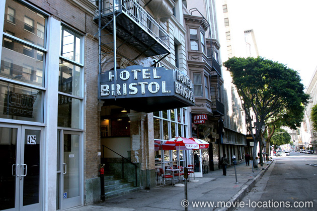
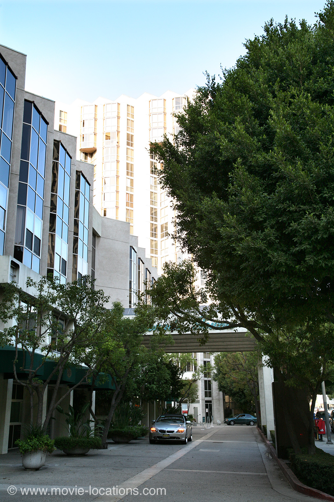
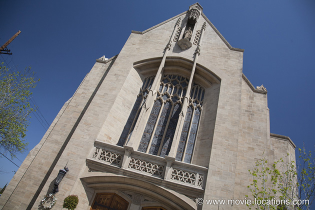
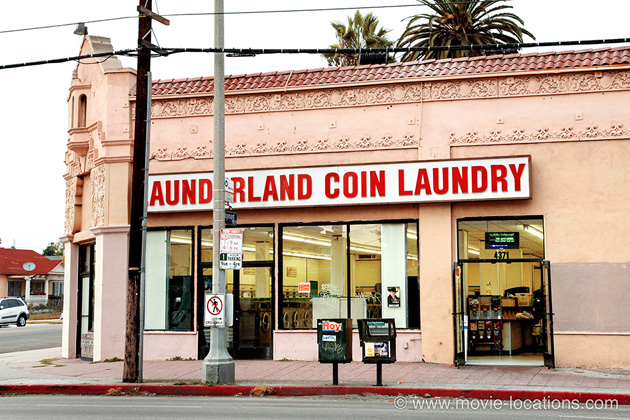
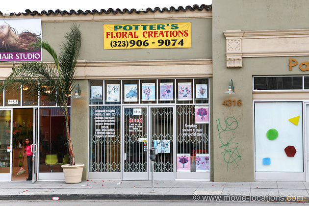
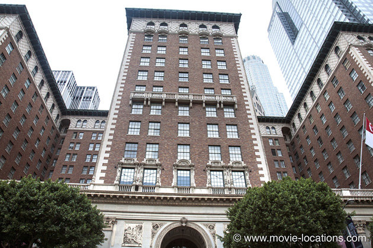
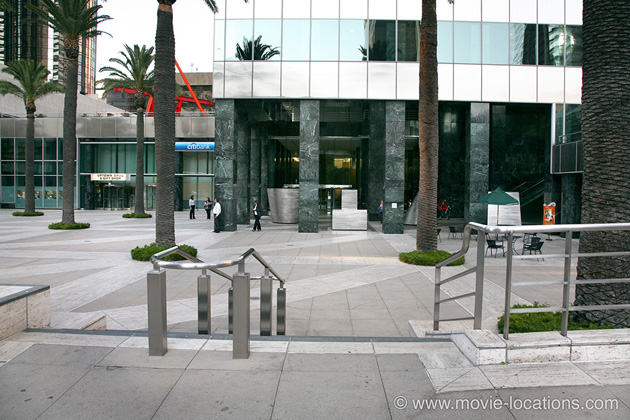
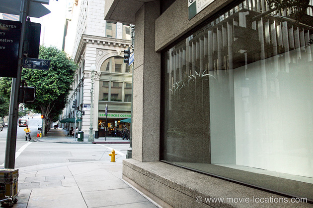
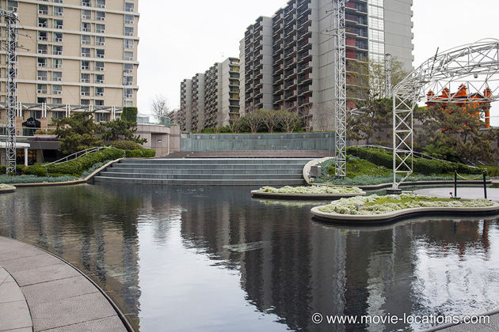
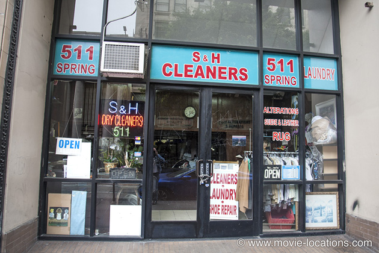

Fight Club
Main Content

As in Se7en, David Fincher turns the normally sunny environs of Los Angeles into a dank, grim nightmare for this blacker-than-pitch adaptation of Chuck Palahniuk’s satirical novel, nominally set in ‘Wilmington, Delaware’.
The luxurious ‘Pearson Towers’ condo, in which unnamed narrator Ed Norton indulges his IKEA nesting instinct (slogan: ‘A Place to be Somebody’) is Promenade Towers, 123 South Figueroa Street, between First and Second Streets, downtown Los Angeles.

When it’s blown to bits, he moves into he dismal squat of anarchic Tyler Durden (Brad Pitt). There’s nothing to see: the house on ‘Paper Street’ (a Wilmington address) was nothing more than a temporary set constructed down in the San Pedro harbour area of Los Angeles. It's in the basement beneath the nearby ‘Lou’s Tavern’, a real bar, the the Fight Club itself is instituted. Lou's has since been demolished.

The film, coincidentally, shares a couple of locations with the 1953 War of the Worlds. One of these is the ‘St Francis of Assisi Religious Center’, where Norton’s support group evenings are disrupted by the chain-smoking Marla Singer (Helena Bonham-Carter), which is St Brendan’s Church, 310 South Van Ness Avenue at Third Street, south of Hollywood.

Once they exit the meeting, they're further east, across the Hollywood Freeway toward Silverlake, where you’ll find the launderette from which Marla helps herself to – somebody else’s – clothes. It was Launderland, now Lavanderia Coin Laundry, 4371 Melrose Avenue at North Edgemont Street , East Hollywood.

And about a block to the east is the thrift store, where she sells the clothes. It was flower shop Potter’s, 4314 Melrose Avenue – but it’s since been incorporated into the next door Glamour Hair Studio. Marla agrees to exchange numbers as she's standing opposite in front of the Ukranian Culture Centre, 4315 Melrose Avenue.

On to the restaurant of the ‘luxurious Pressman Hotel’, where Durden does something unspeakable to the cream of mushroom soup, which is the Emerald Ballroom of the familiar Millennium Biltmore Hotel, 506 South Grand Avenue, a hotel seen in dozens of films including Ghostbusters, Beverly Hills Cop, The Bodyguard, Speed, Daredevil and many more. Look out for a glimpse of Tyler Durden in the same location, among the hotel staff on the corporate video welcoming Norton to his hotel room. Just for the record – the hotel’s soup is perfectly fine.
As Durden and the narrator discuss which celeb they'd like to fight (Ernest Hemingway and William Shatner, in fact), they're walking northwest along West 5th Street from South Spring Street, Downtown, past the location where Colin Farrell was pinned down by a sniper in Phone Booth, and in the background you can see the Alexandria Hotel – home of John Doe in Fincher's previous Se7en.
Also downtown Los Angeles, but slightly less classy, Marla’s digs was the 1906 Bristol Hotel, 423 West Eighth Street. During filming, cinematographer Jeff Cronenweth was hospitalised after being hit on the head by a beer-bottle flung down by a disgruntled resident. Trust me, you wouldn’t have wanted to stay there in those days.
The hotel closed in 2003 but, after years of accusations of illegal eviction and legal wrangling over its use, it’s been renovated and opened at the end of 2010 as affordable housing units.

During the ‘homework assignment’, to start a fight with a complete stranger, you’ll probably recognise the forecourt with the geometric metal sculptures as 444 South Flower Street at Fifth Street, downtown: the ‘bank’ robbed by Robert De Niro’s crew in Heat.

The 'Lightning' computer store blown up by Durden’s ‘Project Mayhem’ space monkeys is on the south corner of West Sixth Street at Grand Avenue, southwest of Pershing Square, downtown Los Angeles.
'Operation Latte Thunder', to destroy a piece of corporate art and a franchise coffee shop, sees a huge metal ball launched down the steps of the water feature in the rear of California Plaza, 350 South Grand Avenue between West 3rd and West 4th Streets, alongside the upper terminus of Angels Flight Railway.

When the narrator begins flying around the US on the trail of Durden and his Fight Club franchises, he doesn't really travel too far. The dry cleaners in which he gets a stilted 'I know nothing' response can be found in Downtown LA right alongside the Alexandria Hotel again. It's S&H Cleaners, 511 South Spring Street, and still in business (April 2018)

The old Clifton’s Silver Spoon Cafeteria, 515 West Seventh Street, downtown Los Angeles, which had closed in 1998, became the restaurant in which a confused Norton, warns Marla to get out of town. Don't confuse this with the recently renovated and re-opened Clifton's nearby at 648 South Broadway.
The exterior, where he puts her on the bus, is faked at 325 West Eighth Street, not far from the Bristol. This is the downtown section of street down which Gene Barry seems constantly to be running in – once again – the 1953 War of the Worlds.
Visit Info
Visit The Film Locations
California | Los Angeles
Visit: Los Angeles
Flights: Los Angeles International Airport (LAX), 1 World Way, Los Angeles, CA 90045 (tel: 424.646.5252)
Travelling around: Los Angeles Metro
Stay at: the Millennium Biltmore Hotel, 506 South Grand Ave, Los Angeles, CA 90071 (tel: 213.624.1011)